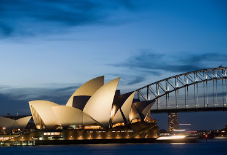
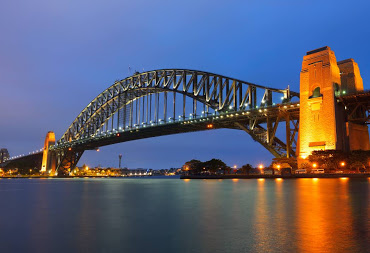
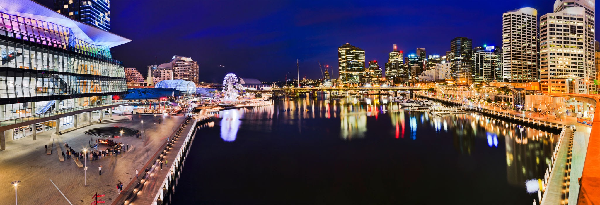
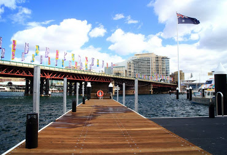
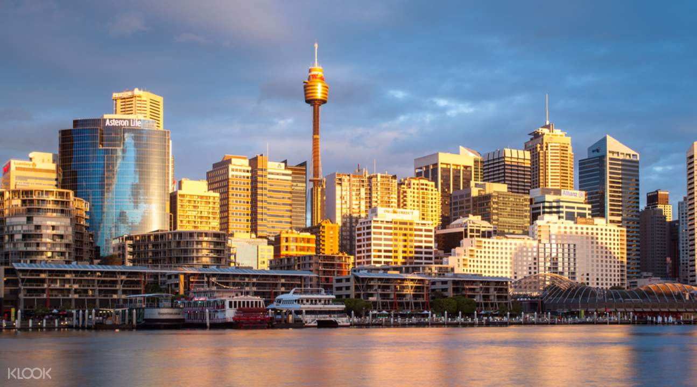

Sydney, capitale de la Nouvelle-Galles du Sud et l'une des plus grandes villes d'Australie, est renommée pour son opéra situé dans le port, avec son design distinctif en forme de voiles. Le vaste Darling Harbour et le plus petit port de Circular Quay sont des pôles majeurs de la vie au bord de l'eau, à proximité du Harbour Bridge et des jardins botaniques royaux. La plate-forme extérieure de Sydney Tower, le Skywalk, offre une vue à 360 degrés sur la ville et ses banlieues.
LE opera de sydney
L’opéra de Sydney (en anglais : Sydney Opera House), à Sydney (Nouvelle-Galles du Sud, Australie), est l'un des plus célèbres bâtiments du xxe siècle et un haut-lieu de représentation des arts notamment lyriques. Son architecture originale, qui ressemble à un voilier pour les uns, ou à un coquillage pour les autres, a été imaginée par le Danois Jørn Utzon. Situé dans le port de Sydney, à Bennelong Point, il est entouré d'un parc boisé au sud et est voisin du célèbre pont Harbour Bridge d'une seule arche. Le paysage qui en résulte est devenu un symbole de l'Australie et de Sydney particulièrement. L'opéra est aujourd'hui une attraction touristique majeure de la ville bien que la plupart des visiteurs n'aient pas l'occasion d'assister à une représentation. Siège de l'Opéra d'Australie, de la Compagnie de théâtre de Sydney et de l'Orchestre symphonique de Sydney, l'Opéra accueille également beaucoup de productions artistiques étrangères en tournée. Il est administré par le Opera House Trust, structure régie par le Ministère des Arts de la Nouvelle-Galles du Sud..

LES Harbour Bridge
Le Harbour Bridge (littéralement : le pont du port), ou pont de Sydney, est un pont en arc métallique situé dans la ville de Sydney, en Australie. Il est le principal point de traversée de la baie de Sydney, permettant le passage des trains, automobiles et piétons entre le quartier des affaires et la rive nord de la baie. La vue du pont et de l’opéra, tout proche, est emblématique de la ville et de l’Australie entière.
Il a été construit par John Bradfield et fut inauguré en 1932.

LES Darling Harbour
Traduit de l'anglais-Darling Harbour est un port adjacent au centre-ville de Sydney, en Nouvelle-Galles du Sud, en Australie, qui se compose d'une grande zone récréative et piétonne située à la périphérie ouest du quartier central des affaires de Sydney

LES ENDROITS MAGNIFIQUES


